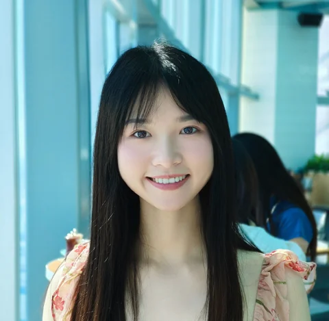
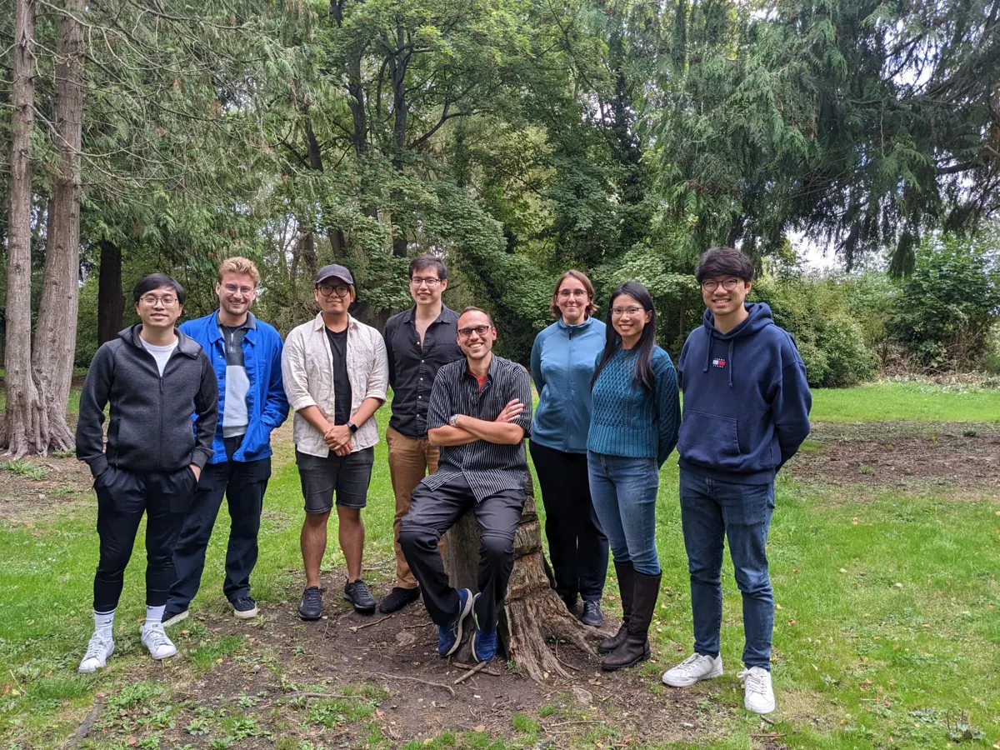
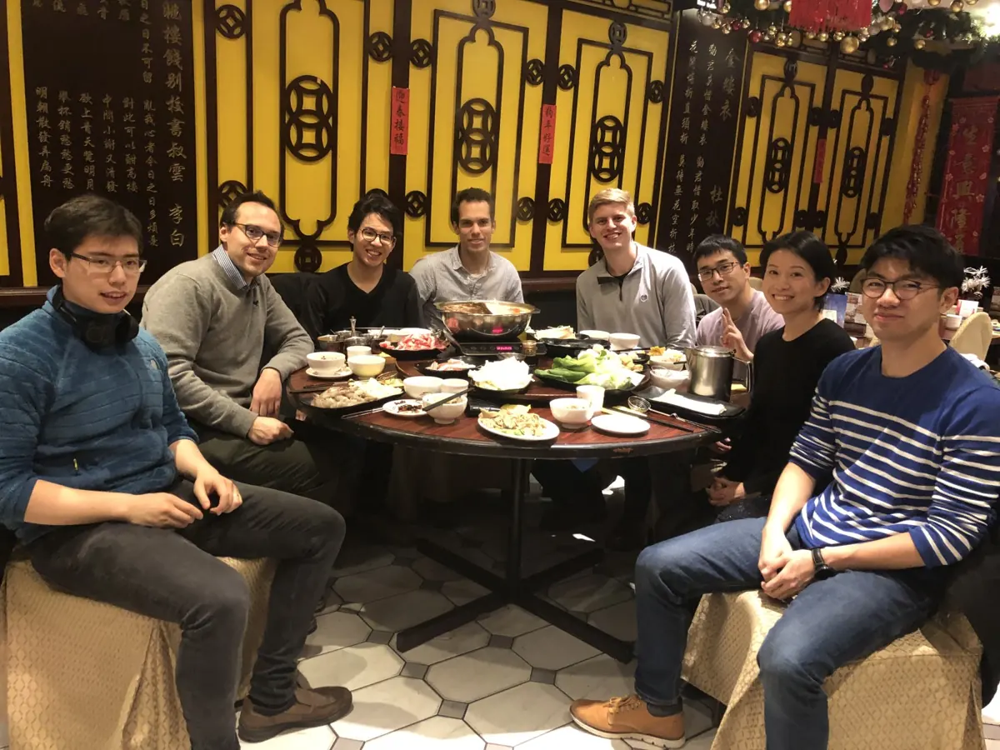

Group
KIPS (Kernels and Information Processing Systems) conducts research spanning a variety of topics at the interface between machine learning and statistical methodology, including:
- Robust and trustworthy machine learning,
- Uncertainty quantification,
- Causal reasoning,
- Explainability,
- Large-scale nonparametric and kernel methods,
- Multiresolution data and data across modalities,
- Physics-informed models,
- Measures of dependence and multivariate interaction,
- Hierarchical and deep generative modelling.
News
FIMI Down Under 2026 · 13–14 December, Adelaide
Faculty
Dino Sejdinovic
Professor of Statistical Machine Learning
School of Mathematical Sciences & Australian Institute for Machine Learning
Adelaide University
Postdocs
Boming Xia
responsible AI, AI safety, SE4AI

Mengjing Wu
probabilistic machine learning, Bayesian deep learning, functional inference
PhD Students
Vinh Nguyen
causality, reinforcement learning
Yihe Chen
experimental design, causality, fairness
Alumni (Oxford)
Jake Fawkes, DPhil, 2025
DPhil, graduated in 2025, Oxford, Thesis: Data quality in causal machine learning with applications to algorithmic fairness (now CHAI Research Fellow at University College London)
Veit Wild, DPhil, 2025
DPhil, graduated in 2025, Oxford, Thesis: Generalized variational inference in infinite dimensions (now Quantitative Researcher at Appian Way Energy Partners)
Shahine Bouabid, DPhil, 2024
DPhil, graduated in 2024, Oxford, Thesis: Transforming kernel-based learners to incorporate domain knowledge from climate science (now Postdoc at MIT)
Valerie Bradley, DPhil, 2024
DPhil, graduated in 2024, Oxford, Thesis: Quantifying and mitigating selection bias in probability and nonprobability samples (now Chief Data Science & Innovation Officer at Impact Research)
Siu Lun Chau, DPhil, 2023
DPhil, graduated in 2023, Oxford, Thesis: Towards trustworthy machine learning with kernels (now Assistant Professor at Nanyang Technological University, Singapore)
Robert Hu, DPhil, 2022
DPhil, graduated in 2022, Oxford, Thesis: Large scale methods for kernels, causal inference and survival modelling (now Research Scientist at Graphcore)
Jean-Francois Ton, DPhil, 2022
DPhil, graduated in 2022, Oxford, Thesis: Causal Reasoning and Meta Learning using Kernel Mean Embeddings (now Senior Research Scientist at TikTok)
Anthony Caterini, DPhil, 2021
DPhil, graduated in 2021, Oxford, Thesis: Expanding the Capabilities of Normalizing Flows in Deep Generative Models and Variational Inference (now Senior Machine Learning Scientist at Layer6 AI, Toronto)
David Rindt, DPhil, 2021
DPhil, graduated in 2021, Oxford, Thesis: Nonparametric Independence Testing and Regression for Time-to-Event Data (now Quantitative Researcher at IMC Trading)
Zhu Li, DPhil, 2021
DPhil, graduated in 2021, Oxford, Thesis: On the Properties of Random Feature Methods (now Chapman Fellow at Imperial College London)
Qinyi Zhang, DPhil, 2020
DPhil, graduated in 2020, Oxford, Thesis: Kernel Based Hypothesis Tests: Large-Scale Approximations and Bayesian Perspectives (now Quantitative Researcher at Afairi AG)
Ho Chung Leon Law, DPhil, 2019
DPhil, graduated in 2019, Oxford, Thesis: Testing and Learning on Distributional and Set Inputs (now Quantitative Researcher at Citadel Securities)
Jovana Mitrovic, DPhil, 2019
DPhil, graduated in 2019, Oxford, Thesis: Representation Learning with Kernel Methods (now Senior Research Scientist at Google DeepMind)
Alumni (Adelaide)
Gaurangi Anand, Postdoc, 2024–2026
Postdoc, 2024-2026, Adelaide
Erdun Gao, Postdoc, 2024–2026
Postdoc, 2024-2026, Adelaide
Peter Moskvichev, MPhil, 2026
MPhil, graduated in 2026, Adelaide, Thesis: Kernel Differences Between Conditional Distributions with Applications in Uncertainty Calibration (now PhD student at NTU Singapore)
Vivienne Niejalke, MPhil, 2025
MPhil, graduated in 2025, Adelaide, Thesis: Geolocation with Latent Variable Models
Visitors
Daokun Zhang, Jan 2024
Siu Lun Chau, Nov-Dec 2023
Mengyan Zhang, Jul 2023
Julien Lenhardt, May-Jun 2022
Emiliano Diaz Salas Porras, Oct-Dec 2019
Gianni Franchi, Aug-Nov 2015



